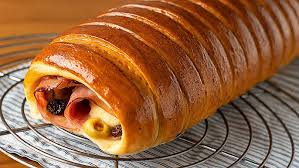

PAN DE JAMÓN


El Pan de Jamón, es sinonimo de navidad. Este tipo de pan forma parte
de la tradición navideña venezolana. Desde el mes de noviembre las panaderías del
país comienza desde temprano a elaborar pan de jamón en diferentes tamaño. La masa puede
ser de pan tradicional u hojaldre
El pan de jamón es el compañero impelable del plato navideño venezolano
(hallaca,pernil al horno, ensalada de gallina). En la cena navideña siempre hay un pan de jamón
INGREDIENTES
Para el pan
- 1 kg de harina de trigo todo uso
- 2 tazas de agua
- 3 cucharadas de levadura
- 3 cucharadas de azúcar
- 4 cucharadas de leche
- 1 cucharada de sal
- 2 huevos
- 200 gramos de manteca o mantequilla
Para el relleno
- 500 kg de jamon
- 300 grs de panceta
- 300 grs de aceitunas verdes
- 300 grs de pasas
- 1 huevos
Pasos
- En una taza de agua tibia, mezcle la levadura y el azúcar. Dejar levar
- Cuando ya haya leudado la mezcla anterior, preparamos en una mesa la harina en forma de volcán y alrededor se añade la sal, leche y azúcar
- En el centro agregamos dos huevos, manteca derretida y la mezcla leudada
- Comience a amasar, al principio sentirá toda mezcla pegada de sus dedos, continue amasando y con la masa incorpore
el líquido que se le ha derramado.
- Repita el paso anterior, hasta que no le quede líquido en su mesa, !amase con amor¡
- Cuando ya la tenga una masa suave que no se le pegue en sus dedos, la deberá colocar en un envase y tapar
antes cubrala con un poco de harina o aceite. Dejela reposar por 40 minutos
- Pasado el tiempo, en la mesa enharinada divida la masa en dos. Reserve una mitad
- Con un rodillo estirar la masa hasta que le quede preferiblemente un rectángulo
- Cubrir con jamón, panceta, esparcir por toda la superficie las pasas y las aceitunas
- Enrollar Enrollar la masa hacia adentro desde el lateral de las aceitunas,
cuando se llegue a los cortes dejar de enrollar y sellar el pan con las tiras de masa.
- Repetir todo el proceso con la otra mitad de masa que se había reservado.
Pinchar los dos panes con un tenedor para que entre aire al hornear.
Tapar con un trapo y dejar reposar 40 minutos. Precalentar el horno a 200º C con calor arriba y abajo.
Ponemos los panes en una bandeja sobre papel manteca.
- Bajar la temperatura a 180º C y hornear 18-20 minutos. Sacar del horno,
pincelar con el huevo batido y volver a hornear otros 20 minutos a 175º C,
hasta comprobar que el pan está dorado por fuera.
Este tiempo depende de la “potencia” y/o eficiencia del horno.
- Retirar del horno y dejar que se temple a temperatura ambiente, antes de consumirlo.
Para servirlo, cortar con cuidado de que no se rompa el pan,
en rodajas de unos 2-3 cm. de grosor.